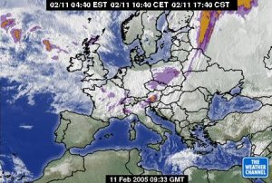

Vreme - 11.2.2005 |
|
Vremenska slikaNad vzhodno in južno Evropo je območje visokega zračnega pritiska, nad severnim Atlantikom in Skandinavijo pa območje nizkega zračnega pritiska. Hladna fronta je nad srednjo Evropo. Z zahodnimi vetrovi doteka nad naše kraje toplejši in v višinah precej vlažen zrak. |
Napoved za SlovenijoDanes in jutri bo pretežno oblačno, jutri bo na Primorskem in Notranjskem ponekod tudi megleno. Jutri popoldne bo lahko predvsem v hribovitem delu zahodne Slovenije rahlo rosilo ali deževalo. Jutri bo zapihal jugozahodni veter. Najnižje jutranje temperature bodo od -3 do 3, najvišje dnevne danes od 1 do 6, na Primorskem do 9, jutri od 4 do 10℃. Napoved za sosednje pokrajineV sosednjih pokrajinah bo danes in jutri pretežno oblačno. Manjše padavine se bodo pojavljale predvsem severno od naših krajev. Jutri bo zapihal jugozahodni veter. |
Več o vremenu |
|